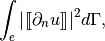
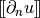

Mesh refinement¶
Mesh refinement with the Bank et all method (see [bank1983]) is available in dimension 1, 2 or 3 for simplex meshes (segments, triangles and tetrahedrons). For a given object mymesh of type getfem::mesh, the method:
mymesh.Bank_refine(bv);
refines the elements whose indices are stored in bv (a dal::bit_vector object). The conformity of the mesh is kept thanks to additional refinement (the so called green triangles). Information about green triangles (in Figure Example of Bank refinement in 2D) is stored on the mesh object to gather them for further refinements (see [bank1983]).
{kind=link}
Example of Bank refinement in 2D
Mesh refinement is most of the time coupled with an a posteriori error estimate. A very basic error estimate is available in the file getfem/getfem_error_estimate.h:
error_estimate(mim, mf, U, err, rg);
where mim is the integration method (a getfem::mesh_im object), mf is the finite element method on which the unknown has been computed (a getfem::mesh_fem object), U is the vector of degrees of freedom of the unknown, err is a sufficiently large vector in which the error estimate is computed for each element of the mesh, and rg is a mesh region bulild from elements on which the error estimate should be computed (a getfem::mesh_region object).
This basic error estimate is only valid for order two problems and just compute the sum of the jump in normal derivative across the elements on each edge (for two-dimensional problems) or each face (for three-dimensional problems). This means that for each face of the mesh the following quantity is computed:

where  is the jump of the normal derivative. Then, the error estimate for a given element is the sum of the computed quantities on each internal face multiplied by the element diameter. This basic error estimate can be taken as a model for more elaborated ones. It uses the high-level generic assembly and the neighbour_elt interpolate transformation (see Evaluating discontinuities across inter-element edges/faces).

前のトピックへ
次のトピックへ
Compute arbitrary terms - high-level generic assembly procedures
Download
Main documentations
- GetFEM++ User documentation
- Python Interface
- Matlab Interface
- Scilab Interface
- Gmm++
- GetFEM++ project